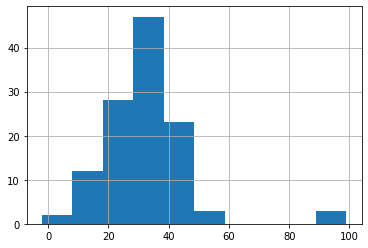
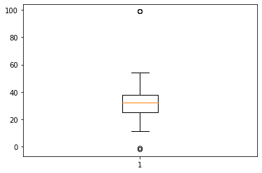
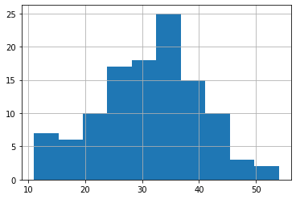
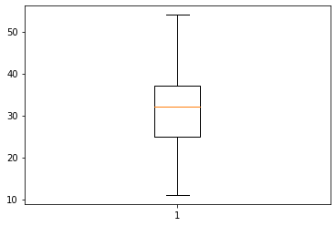

import pandas as pd
import matplotlib.pyplot as pltStatistical Outlier Detection - IQR
Statistical Outlier Detection - IQR
We know that IQR is Q3 - Q1, and we can set the lower and upper bound by Q1 - 1.5IQR and Q3 + 1.5IQR. Boxplot automatically draws the lower/upper bound for us. We can also detect the data by defining a function.
Dependencies
Read data in and print basic stats out
df = pd.read_csv("/work/Nov2Temp.csv")
df.info()<class 'pandas.core.frame.DataFrame'>
RangeIndex: 120 entries, 0 to 119
Data columns (total 2 columns):
# Column Non-Null Count Dtype
--- ------ -------------- -----
0 high 120 non-null int64
1 low 120 non-null int64
dtypes: int64(2)
memory usage: 2.0 KBdf.describe()| high | low | |
|---|---|---|
| count | 120.00000 | 120.000000 |
| mean | 38.67500 | 15.158333 |
| std | 136.36864 | 133.241172 |
| min | -998.00000 | -998.000000 |
| 25% | 48.00000 | 24.750000 |
| 50% | 57.00000 | 32.000000 |
| 75% | 66.25000 | 37.250000 |
| max | 99.00000 | 99.000000 |
Deal with missing values
df[df['low']<-100]| high | low | |
|---|---|---|
| 72 | -998 | -998 |
| 79 | -998 | -998 |
df[df['high']<-100]| high | low | |
|---|---|---|
| 72 | -998 | -998 |
| 79 | -998 | -998 |
df = df.drop([72,79]) df.describe()| high | low | |
|---|---|---|
| count | 118.000000 | 118.000000 |
| mean | 56.245763 | 32.330508 |
| std | 15.233755 | 14.575506 |
| min | 15.000000 | -2.000000 |
| 25% | 48.250000 | 25.000000 |
| 50% | 57.500000 | 32.000000 |
| 75% | 66.750000 | 37.750000 |
| max | 99.000000 | 99.000000 |
df.shape(118, 2)Check for outliers
df['low'].hist()<matplotlib.axes._subplots.AxesSubplot at 0x7f7598980750>
plt.boxplot(df['low']){'boxes': [<matplotlib.lines.Line2D at 0x7f75983d7f50>],
'caps': [<matplotlib.lines.Line2D at 0x7f75983e0f50>,
<matplotlib.lines.Line2D at 0x7f75983e64d0>],
'fliers': [<matplotlib.lines.Line2D at 0x7f75983e6f90>],
'means': [],
'medians': [<matplotlib.lines.Line2D at 0x7f75983e6a50>],
'whiskers': [<matplotlib.lines.Line2D at 0x7f75983e04d0>,
<matplotlib.lines.Line2D at 0x7f75983e0a10>]}
Setup thresholds
low_IQR = df['low'].quantile(0.75) - df['low'].quantile(0.25)
low_low_limit = df['low'].quantile(0.25) - 1.5 * low_IQR
print(low_low_limit)5.875low_high_limit = df['low'].quantile(0.75) + 1.5 * low_IQR
print(low_high_limit)56.875df[df['low'] < low_low_limit] | high | low | |
|---|---|---|
| 41 | 41 | -2 |
| 81 | 18 | -1 |
df[df['low'] > low_high_limit] | high | low | |
|---|---|---|
| 111 | 48 | 99 |
| 112 | 43 | 99 |
| 113 | 64 | 99 |
df.drop(df[df['low'] < low_low_limit].index, inplace = True)df.drop(df[df['low'] > low_high_limit].index, inplace = True)df['low'].hist()<matplotlib.axes._subplots.AxesSubplot at 0x7f75988e1b50>
plt.boxplot(df['low']){'boxes': [<matplotlib.lines.Line2D at 0x7f75982f9250>],
'caps': [<matplotlib.lines.Line2D at 0x7f7598300250>,
<matplotlib.lines.Line2D at 0x7f7598300790>],
'fliers': [<matplotlib.lines.Line2D at 0x7f7598288290>],
'means': [],
'medians': [<matplotlib.lines.Line2D at 0x7f7598300d10>],
'whiskers': [<matplotlib.lines.Line2D at 0x7f75982f9790>,
<matplotlib.lines.Line2D at 0x7f75982f9cd0>]}
Inclass Practice
Inclass practice: Let’s do the same thing for df[‘high’], and df[‘avg’] (( high-low) / 2)
Optional Practice
Requirement: Define a function outlier_remover(df) that takes a dataframe df, remove the statistical outliers (defined as data outside lower/upper limit range), and return a df without outliers.